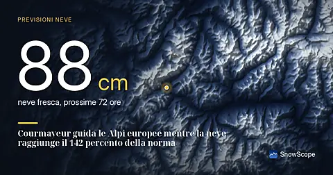
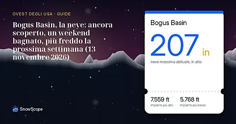
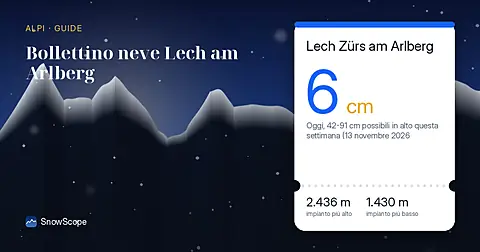
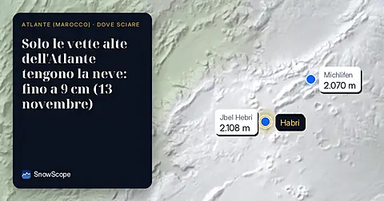
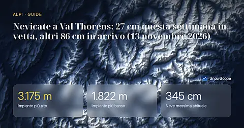
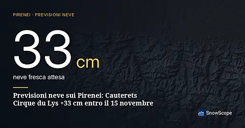

Bollettini neve · Previsioni neve
Bollettini neve quotidiani per sciatori: dove c'è neve, cosa arriva e dove sciare, dalla mappa neve di SnowScope e dalle stazioni di misura. Ogni numero viene dai dati del giorno.

A Andermatt (2963 m) la previsione indica 75 mm di precipitazioni dal 15 novembre al 20 novembre. Nelle ore di pioggia lo zero termico è vicino a 2160

Courmayeur guida le previsioni con 88 cm in 72 ore; la profondità della neve è al 142 percento della norma per metà novembre secondo i dati del 15 novembre.

Punto neve a Bogus Basin per chi scia da Boise il 13 novembre 2026: ancora niente neve al suolo, pioggia e neve bagnata nel weekend con il limite verso 6,300-6,800 ft, poi aria più fredda e circa 8 in in vetta entro la prossima settimana.

La mappa delle piste di Sillian (Hochpustertal) con il nostro strato di neve il 13 novembre 2026: 8,6 cm in vetta a 2399 m, pendii bassi scoperti e una settimana di pioggia e neve miste con il limite verso 1.800-2.000 m.

Bollettino neve di Lech Zürs del 13 novembre 2026: circa 6 cm in vetta (2436 m) e a metà montagna, niente a Lech a 1430 m. Questa settimana 42 cm in alto secondo la nostra previsione, fino a 91 cm secondo altre, pioggia e neve mista intorno ai 1400 m. E perché Lech è il lato nevoso dell'Arlberg.

Le località sciistiche dell'Atlante oggi non trattengono neve sulle piste. La neve è immagazzinata solo sulle vette più alte: circa 40 km² di …

Bollettino neve di Obergurgl del 13 novembre 2026: circa 20 cm in vetta (3024 m), 5 cm a metà montagna, niente agli impianti più bassi (1784 m). Previsioni della settimana: 34 cm in alto, 21 cm in basso, quota neve intorno ai 1700 m. E il solito inizio di stagione.

Altezza neve a Sölden il 13 novembre 2026: circa 9 cm in vetta (3245 m), 5 cm a metà montagna, niente in valle a 1346 m. 25 cm previsti in alto questa settimana, pioggia sotto i 1620 m circa. Ghiacciaio contro paese, con 46 inverni passati.

Nevicate a Val Thorens, 13 novembre 2026: 27 cm caduti in vetta (3175 m) e 17 cm a 2498 m in sette giorni; l'altezza della neve è 50 cm e 8 cm. Prossimi sette giorni: 86 cm in vetta, 73 cm a 2498 m, limite delle nevicate ben sotto il paese. La stagione abituale da 46 inverni.

L'altezza della neve a Chamonix il 13 novembre 2026, quota per quota: niente sul fondovalle, 1 cm a 2001 m, 12 cm in cima a Brévent-Flégère (2486 m), da 5 a 24 cm in cima ai Grands Montets (2768 m). Circa un metro previsto in quota questa settimana, pioggia in valle. Quanta neve fa di solito a Chamonix, da 46 inverni.

Condizioni neve a Tignes il 13 novembre 2026: 42 cm in vetta (3447 m), 12 cm a 2503 m, fondovalle senza neve a 1559 m e 99 cm previsti in vetta in sette giorni, con pioggia sotto i 1700 m circa. Il confronto con 46 inverni passati.

Bollettino neve sui Pirenei, 12 novembre. Guardando al 15 novembre, la previsione porta 33 cm a Cauterets Cirque du Lys, 29 cm a Piau-Engaly e 25 cm …

La Rosière in vetta mantiene 24 cm l'11 novembre; i prossimi sette giorni prevedono 108 cm a 2799 m, 61 cm a media montagna.
Alpe Devero ha 2 cm a 2201 m il 12 novembre. La settimana in arrivo porterà 36 cm in vetta, 24 cm a mezza montagna e 21 cm a valle.

Nessuna neve ancora a Oukaïmeden il 12 novembre. Le vette dell'Atlante restano libere; la stagione invernale raggiunge il picco tipicamente a marzo con 58 cm in quota.

La neve di oggi a Livigno, cosa dice la previsione stagionale europea per dicembre e perché a Natale la quota vince su un mese caldo.

La neve di oggi a Cortina, la previsione stagionale europea per dicembre e le nostre probabilità di un Natale bianco nelle Dolomiti orientali.

Previsioni Dolomiti dicembre 2026: più caldo di 1,7 °C, leggermente più umido, 30 cm di neve entro fine anno, Natale bianco a media quota. Dati del 10 novembre.

Quanta acqua potrebbe tenere la neve dell'Atlante a febbraio 2027: la previsione stagionale europea è di circa 3 °C più calda e più umida a ovest e a sud, e le probabilità di neve restano basse sui bacini del Marocco.

Previsione gennaio 2027 per l'Atlante del Marocco: 69 milioni di m³ di acqua di neve attesi, ben al di sotto dei soliti 206. Dati del 10 novembre 2026.
Bou Iblane rimane spogli a dicembre. Previsione stagionale: 2,3°C più caldo del solito, solo 22 cm di neve fresca attesa, 0 cm al suolo il 31 dicembre. Dati: 10 novembre 2026.

Prospettive stagionali per le Montagne Rocciose: dicembre più caldo, neve vicina alla norma, ma il nord tende al magro mentre Colorado e Utah rimangono incerti. Dati del 10 novembre 2026.

Dicembre nelle Alpi Meridionali sarà più caldo e più umido del solito, ma la profondità della neve a fine anno dovrebbe rimanere vicina alla norma. Analisi SnowScope dell'11 novembre 2026.

Oukaimeden affronta un dicembre caldo con 13 cm previsti il 31 dicembre, ben al di sotto dei consueti 26 cm. Dati del 10 novembre 2026.
Chamonix inizia dicembre con 27 cm in quota ma neve sottile più in basso. Il caldo e l'umidità si contrappongono; aspettarsi neve dicembrino quasi normale. Dati del 10 novembre 2026.

Quota neve prevista 2.190–2.850 m dal 8–10 novembre. I pendii alti ricevono neve; le valli restano bagnate. Dati dell'7 novembre.
Limite neve vicino a 3.710 m dall'8 al 12 novembre: pioggia a Oukaïmeden e Imlil, neve sulla vetta del Toubkal. Mappa e grafico.